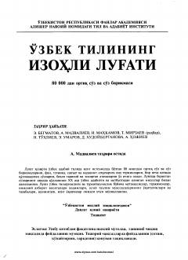

OTO'zbek tilining 80 mingdan ortiq so'z va birikmalarini o'z ichiga olgan izohli lug'ati.
Ushbu lug'at hozirgi o'zbek adabiy tilida keng iste'molda bo'lgan 80 mingdan ortiq so'z va so'z birikmalarini o'z ichiga oladi. Unda so'zlarning ma'nolari, qo'llanilishi va adabiyotdan olingan misollar keltirilgan.